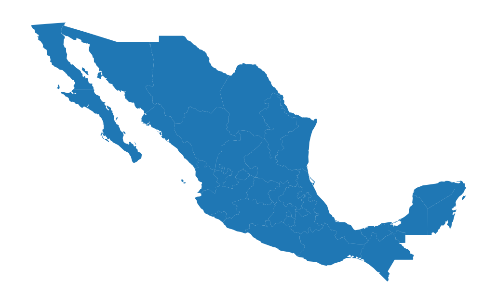
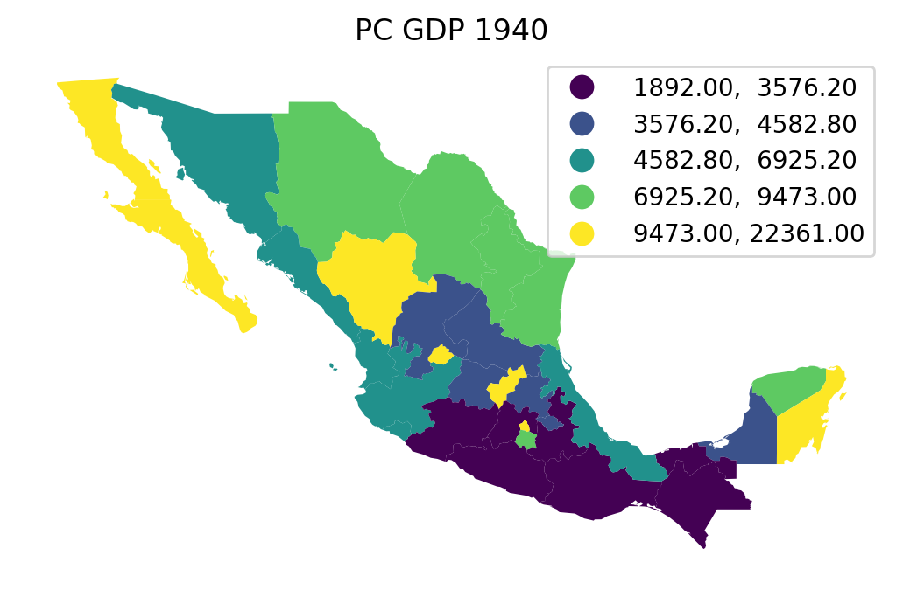
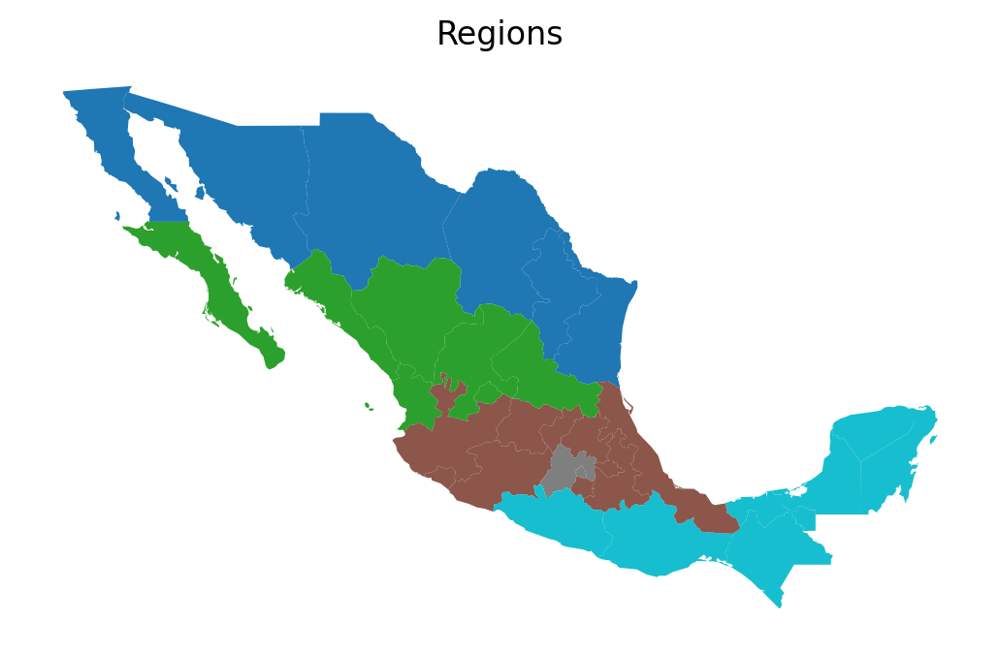
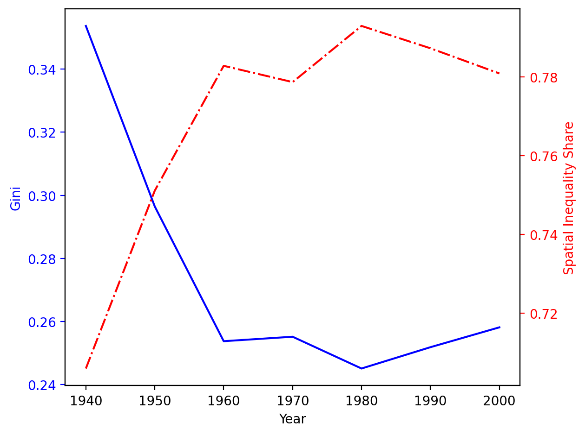

This page was generated from notebooks/gini.ipynb.
Interactive online version:

Demonstrating the Gini Coefficient:¶
Spatial Inequality in Mexico: 1940-2000¶
Imports & Input Data
Classic Gini Coefficient
Spatial Gini Coefficient
1. Imports & Input Data¶
[1]:
%config InlineBackend.figure_format = "retina"
%load_ext watermark
%watermark
Last updated: 2023-01-16T21:00:59.129990-05:00
Python implementation: CPython
Python version : 3.10.8
IPython version : 8.8.0
Compiler : Clang 14.0.6
OS : Darwin
Release : 22.2.0
Machine : x86_64
Processor : i386
CPU cores : 8
Architecture: 64bit
[2]:
import geopandas
import inequality
import libpysal
import matplotlib.pyplot as plt
import numpy
[3]:
%watermark -w
%watermark -iv
Watermark: 2.3.1
libpysal : 4.7.0
inequality: 1.0.0+28.g078a825.dirty
matplotlib: 3.6.2
numpy : 1.24.1
json : 2.0.9
geopandas : 0.12.2
[4]:
libpysal.examples.explain("mexico")
mexico
======
Decennial per capita incomes of Mexican states 1940-2000
--------------------------------------------------------
* mexico.csv: attribute data. (n=32, k=13)
* mexico.gal: spatial weights in GAL format.
* mexicojoin.shp: Polygon shapefile. (n=32)
Data used in Rey, S.J. and M.L. Sastre Gutierrez. (2010) "Interregional inequality dynamics in Mexico." Spatial Economic Analysis, 5: 277-298.
[5]:
pth = libpysal.examples.get_path("mexicojoin.shp")
gdf = geopandas.read_file(pth)
[6]:
ax = gdf.plot()
ax.set_axis_off()

[7]:
gdf.head()
[7]:
| POLY_ID | AREA | CODE | NAME | PERIMETER | ACRES | HECTARES | PCGDP1940 | PCGDP1950 | PCGDP1960 | ... | GR9000 | LPCGDP40 | LPCGDP50 | LPCGDP60 | LPCGDP70 | LPCGDP80 | LPCGDP90 | LPCGDP00 | TEST | geometry | |
|---|---|---|---|---|---|---|---|---|---|---|---|---|---|---|---|---|---|---|---|---|---|
| 0 | 1 | 7.252751e+10 | MX02 | Baja California Norte | 2040312.385 | 1.792187e+07 | 7252751.376 | 22361.0 | 20977.0 | 17865.0 | ... | 0.05 | 4.35 | 4.32 | 4.25 | 4.40 | 4.47 | 4.43 | 4.48 | 1.0 | MULTIPOLYGON (((-113.13972 29.01778, -113.2405... |
| 1 | 2 | 7.225988e+10 | MX03 | Baja California Sur | 2912880.772 | 1.785573e+07 | 7225987.769 | 9573.0 | 16013.0 | 16707.0 | ... | 0.00 | 3.98 | 4.20 | 4.22 | 4.39 | 4.46 | 4.41 | 4.42 | 2.0 | MULTIPOLYGON (((-111.20612 25.80278, -111.2302... |
| 2 | 3 | 2.731957e+10 | MX18 | Nayarit | 1034770.341 | 6.750785e+06 | 2731956.859 | 4836.0 | 7515.0 | 7621.0 | ... | -0.05 | 3.68 | 3.88 | 3.88 | 4.04 | 4.13 | 4.11 | 4.06 | 3.0 | MULTIPOLYGON (((-106.62108 21.56531, -106.6475... |
| 3 | 4 | 7.961008e+10 | MX14 | Jalisco | 2324727.436 | 1.967200e+07 | 7961008.285 | 5309.0 | 8232.0 | 9953.0 | ... | 0.03 | 3.73 | 3.92 | 4.00 | 4.21 | 4.32 | 4.30 | 4.33 | 4.0 | POLYGON ((-101.52490 21.85664, -101.58830 21.7... |
| 4 | 5 | 5.467030e+09 | MX01 | Aguascalientes | 313895.530 | 1.350927e+06 | 546702.985 | 10384.0 | 6234.0 | 8714.0 | ... | 0.13 | 4.02 | 3.79 | 3.94 | 4.21 | 4.32 | 4.32 | 4.44 | 5.0 | POLYGON ((-101.84620 22.01176, -101.96530 21.8... |
5 rows × 35 columns
[8]:
ax = gdf.plot(column="PCGDP1940", k=5, scheme="Quantiles", legend=True)
ax.set_axis_off()
ax.set_title("PC GDP 1940");
# plt.savefig("1940.png")

2. Classic Gini Coefficient¶
[9]:
gini_1940 = inequality.gini.Gini(gdf["PCGDP1940"])
gini_1940.g
[9]:
0.3537237117345285
[10]:
decades = range(1940, 2010, 10)
decades
[10]:
range(1940, 2010, 10)
[11]:
ginis = [inequality.gini.Gini(gdf["PCGDP%s" % decade]).g for decade in decades]
ginis
[11]:
[0.3537237117345285,
0.29644613439022827,
0.2537183285655905,
0.25513356494927303,
0.24505338049421577,
0.25181825879538217,
0.2581130824882791]
3. Spatial Gini Coefficient¶
[12]:
inequality.gini.Gini_Spatial
[12]:
inequality.gini.Gini_Spatial
[13]:
regimes = gdf["HANSON98"]
[14]:
w = libpysal.weights.block_weights(regimes, silence_warnings=True)
w
[14]:
<libpysal.weights.weights.W at 0x16b9e22c0>
[15]:
ax = gdf.plot(column="HANSON98", categorical=True)
ax.set_title("Regions")
ax.set_axis_off()
# plt.savefig("regions.png")

[16]:
numpy.random.seed(12345)
gs = inequality.gini.Gini_Spatial(gdf["PCGDP1940"], w)
gs.p_sim
[16]:
0.01
[17]:
gs_all = [
inequality.gini.Gini_Spatial(gdf["PCGDP%s" % decade], w) for decade in decades
]
[18]:
p_values = [gs.p_sim for gs in gs_all]
p_values
[18]:
[0.04, 0.01, 0.01, 0.01, 0.02, 0.01, 0.01]
[19]:
wgs = [gs.wcg_share for gs in gs_all]
wgs
[19]:
[0.2940179879590452,
0.24885041274552472,
0.21715641601961586,
0.2212882581200239,
0.20702733316567423,
0.21270360014540865,
0.2190953550725723]
[20]:
bgs = [1 - wg for wg in wgs]
bgs
[20]:
[0.7059820120409548,
0.7511495872544753,
0.7828435839803841,
0.778711741879976,
0.7929726668343258,
0.7872963998545913,
0.7809046449274277]
[21]:
years = numpy.array(decades)
years
[21]:
array([1940, 1950, 1960, 1970, 1980, 1990, 2000])
[22]:
fig, ax1 = plt.subplots()
t = years
s1 = ginis
ax1.plot(t, s1, "b-")
ax1.set_xlabel("Year")
# Make the y-axis label, ticks and tick labels match the line color.
ax1.set_ylabel("Gini", color="b")
ax1.tick_params("y", colors="b")
ax2 = ax1.twinx()
s2 = bgs
ax2.plot(t, s2, "r-.")
ax2.set_ylabel("Spatial Inequality Share", color="r")
ax2.tick_params("y", colors="r")
fig.tight_layout()
# plt.savefig("share.png")
